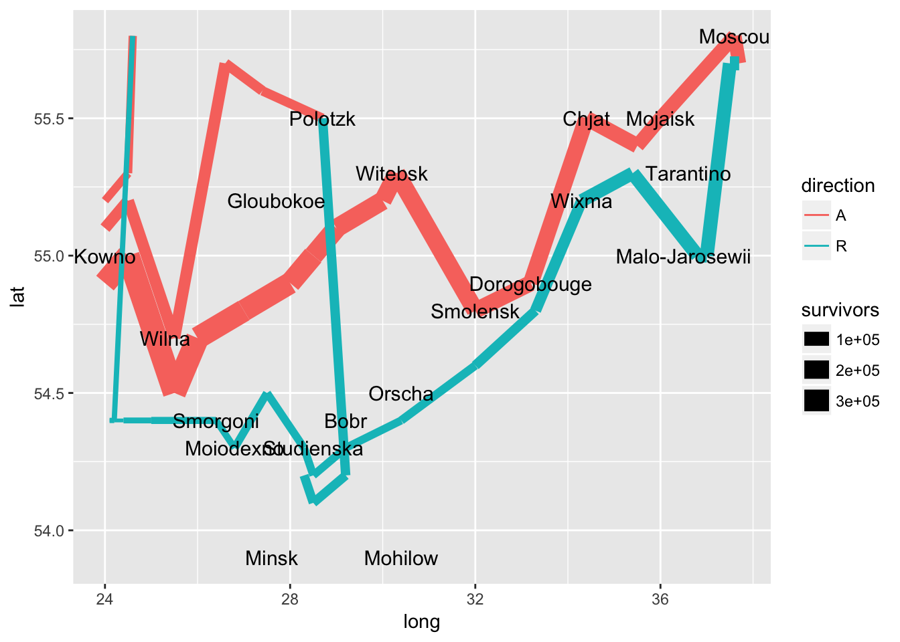
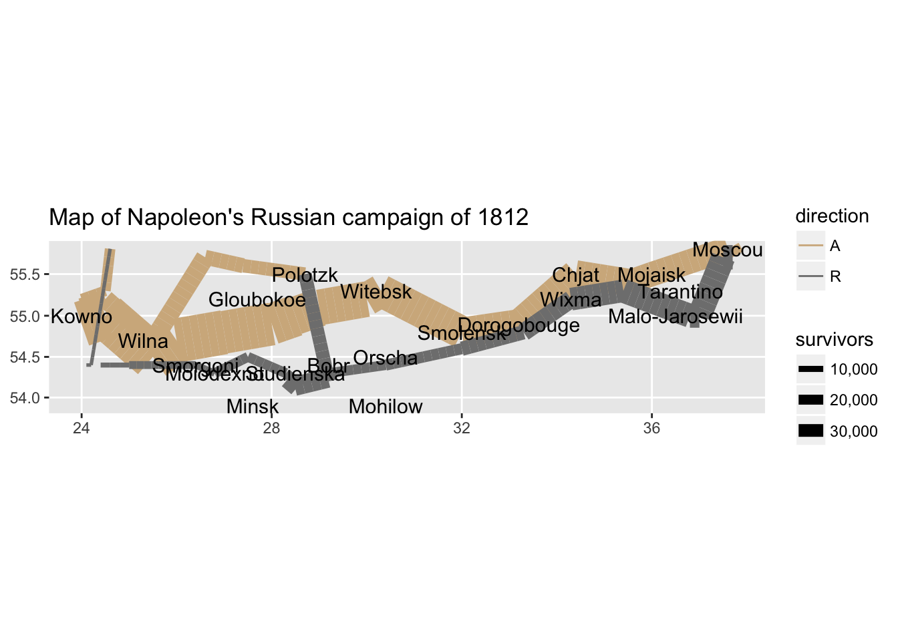

How to build a complicated, layered graphic
library(tidyverse)
library(knitr)
library(here)Charles Minard’s map of Napoleon’s disastrous Russian campaign of 1812

The graphic is notable for its representation in two dimensions of six types of data: the number of Napoleon’s troops; distance; temperature; the latitude and longitude; direction of travel; and location relative to specific dates.1
Building Minard’s map in R
# get data on troop movements and city names
troops <- here("data", "minard-troops.txt") %>%
read_table()## Parsed with column specification:
## cols(
## long = col_double(),
## lat = col_double(),
## survivors = col_double(),
## direction = col_character(),
## group = col_double()
## )cities <- here("data", "minard-cities.txt") %>%
read_table()## Parsed with column specification:
## cols(
## long = col_double(),
## lat = col_double(),
## city = col_character()
## )troops## # A tibble: 51 x 5
## long lat survivors direction group
## <dbl> <dbl> <dbl> <chr> <dbl>
## 1 24 54.9 340000 A 1
## 2 24.5 55 340000 A 1
## 3 25.5 54.5 340000 A 1
## 4 26 54.7 320000 A 1
## 5 27 54.8 300000 A 1
## 6 28 54.9 280000 A 1
## 7 28.5 55 240000 A 1
## 8 29 55.1 210000 A 1
## 9 30 55.2 180000 A 1
## 10 30.3 55.3 175000 A 1
## # … with 41 more rowscities## # A tibble: 20 x 3
## long lat city
## <dbl> <dbl> <chr>
## 1 24 55 Kowno
## 2 25.3 54.7 Wilna
## 3 26.4 54.4 Smorgoni
## 4 26.8 54.3 Moiodexno
## 5 27.7 55.2 Gloubokoe
## 6 27.6 53.9 Minsk
## 7 28.5 54.3 Studienska
## 8 28.7 55.5 Polotzk
## 9 29.2 54.4 Bobr
## 10 30.2 55.3 Witebsk
## 11 30.4 54.5 Orscha
## 12 30.4 53.9 Mohilow
## 13 32 54.8 Smolensk
## 14 33.2 54.9 Dorogobouge
## 15 34.3 55.2 Wixma
## 16 34.4 55.5 Chjat
## 17 36 55.5 Mojaisk
## 18 37.6 55.8 Moscou
## 19 36.6 55.3 Tarantino
## 20 36.5 55 Malo-JarosewiiExercise: Define the grammar of graphics for this graph
Click here for solution
- Layer
- Data -
troops - Mapping
- \(x\) and \(y\) - troop position (
latandlong) - Size -
survivors - Color -
direction
- \(x\) and \(y\) - troop position (
- Statistical transformation (stat) -
identity - Geometric object (geom) -
path - Position adjustment (position) - none
- Data -
- Layer
- Data -
cities - Mapping
- \(x\) and \(y\) - city position (
latandlong) - Label -
city
- \(x\) and \(y\) - city position (
- Statistical transformation (stat) -
identity - Geometric object (geom) -
text - Position adjustment (position) - none
- Data -
- Scale
- Size - range of widths for troop
path - Color - colors to indicate advancing or retreating troops
- Size - range of widths for troop
- Coordinate system - map projection (Mercator or something else)
- Faceting - none
Write the R code
First we want to build the layer for the troop movement:
plot_troops <- ggplot(data = troops, mapping = aes(x = long, y = lat)) +
geom_path(aes(size = survivors,
color = direction,
group = group))
plot_troops
Next let’s add the cities layer:
plot_both <- plot_troops +
geom_text(data = cities, mapping = aes(label = city), size = 4)
plot_both
Now that the basic information is on there, we want to clean up the graph and polish the visualization by:
- Adjusting the size scale aesthetics for troop movement to better highlight the loss of troops over the campaign.
- Change the default colors to mimic Minard’s original grey and tan palette.
- Change the coordinate system to a map-based system that draws the \(x\) and \(y\) axes at equal intervals.
- Give the map a title and remove the axis labels.
plot_polished <- plot_both +
scale_size(range = c(0, 12),
breaks = c(10000, 20000, 30000),
labels = c("10,000", "20,000", "30,000")) +
scale_color_manual(values = c("tan", "grey50")) +
coord_map() +
labs(title = "Map of Napoleon's Russian campaign of 1812",
x = NULL,
y = NULL)
plot_polished
Finally we can change the default ggplot theme to remove the background and grid lines, as well as the legend:
plot_polished +
theme_void() +
theme(legend.position = "none")
Session Info
devtools::session_info()## ─ Session info ──────────────────────────────────────────────────────────
## setting value
## version R version 3.5.2 (2018-12-20)
## os macOS Mojave 10.14.3
## system x86_64, darwin15.6.0
## ui X11
## language (EN)
## collate en_US.UTF-8
## ctype en_US.UTF-8
## tz America/Chicago
## date 2019-03-02
##
## ─ Packages ──────────────────────────────────────────────────────────────
## package * version date lib source
## assertthat 0.2.0 2017-04-11 [2] CRAN (R 3.5.0)
## backports 1.1.3 2018-12-14 [2] CRAN (R 3.5.0)
## base64enc 0.1-3 2015-07-28 [2] CRAN (R 3.5.0)
## broom 0.5.1 2018-12-05 [2] CRAN (R 3.5.0)
## callr 3.1.1 2018-12-21 [2] CRAN (R 3.5.0)
## cellranger 1.1.0 2016-07-27 [2] CRAN (R 3.5.0)
## cli 1.0.1 2018-09-25 [1] CRAN (R 3.5.0)
## codetools 0.2-16 2018-12-24 [2] CRAN (R 3.5.2)
## colorspace 1.4-0 2019-01-13 [2] CRAN (R 3.5.2)
## crayon 1.3.4 2017-09-16 [2] CRAN (R 3.5.0)
## desc 1.2.0 2018-05-01 [2] CRAN (R 3.5.0)
## devtools 2.0.1 2018-10-26 [1] CRAN (R 3.5.1)
## digest 0.6.18 2018-10-10 [1] CRAN (R 3.5.0)
## dplyr * 0.8.0.1 2019-02-15 [1] CRAN (R 3.5.2)
## evaluate 0.13 2019-02-12 [2] CRAN (R 3.5.2)
## fansi 0.4.0 2018-10-05 [2] CRAN (R 3.5.0)
## forcats * 0.4.0 2019-02-17 [2] CRAN (R 3.5.2)
## fs 1.2.6 2018-08-23 [1] CRAN (R 3.5.0)
## generics 0.0.2 2018-11-29 [1] CRAN (R 3.5.0)
## ggplot2 * 3.1.0 2018-10-25 [1] CRAN (R 3.5.0)
## glue 1.3.0 2018-07-17 [2] CRAN (R 3.5.0)
## gtable 0.2.0 2016-02-26 [2] CRAN (R 3.5.0)
## haven 2.1.0 2019-02-19 [2] CRAN (R 3.5.2)
## here * 0.1 2017-05-28 [2] CRAN (R 3.5.0)
## hms 0.4.2 2018-03-10 [2] CRAN (R 3.5.0)
## htmltools 0.3.6 2017-04-28 [1] CRAN (R 3.5.0)
## httr 1.4.0 2018-12-11 [2] CRAN (R 3.5.0)
## jsonlite 1.6 2018-12-07 [2] CRAN (R 3.5.0)
## knitr * 1.21 2018-12-10 [2] CRAN (R 3.5.1)
## lattice 0.20-38 2018-11-04 [2] CRAN (R 3.5.2)
## lazyeval 0.2.1 2017-10-29 [2] CRAN (R 3.5.0)
## lubridate 1.7.4 2018-04-11 [2] CRAN (R 3.5.0)
## magrittr 1.5 2014-11-22 [2] CRAN (R 3.5.0)
## memoise 1.1.0 2017-04-21 [2] CRAN (R 3.5.0)
## modelr 0.1.4 2019-02-18 [2] CRAN (R 3.5.2)
## munsell 0.5.0 2018-06-12 [2] CRAN (R 3.5.0)
## nlme 3.1-137 2018-04-07 [2] CRAN (R 3.5.2)
## pillar 1.3.1 2018-12-15 [2] CRAN (R 3.5.0)
## pkgbuild 1.0.2 2018-10-16 [1] CRAN (R 3.5.0)
## pkgconfig 2.0.2 2018-08-16 [2] CRAN (R 3.5.1)
## pkgload 1.0.2 2018-10-29 [1] CRAN (R 3.5.0)
## plyr 1.8.4 2016-06-08 [2] CRAN (R 3.5.0)
## prettyunits 1.0.2 2015-07-13 [2] CRAN (R 3.5.0)
## processx 3.2.1 2018-12-05 [2] CRAN (R 3.5.0)
## ps 1.3.0 2018-12-21 [2] CRAN (R 3.5.0)
## purrr * 0.3.0 2019-01-27 [2] CRAN (R 3.5.2)
## R6 2.4.0 2019-02-14 [1] CRAN (R 3.5.2)
## Rcpp 1.0.0 2018-11-07 [1] CRAN (R 3.5.0)
## readr * 1.3.1 2018-12-21 [2] CRAN (R 3.5.0)
## readxl 1.3.0 2019-02-15 [2] CRAN (R 3.5.2)
## remotes 2.0.2 2018-10-30 [1] CRAN (R 3.5.0)
## rlang 0.3.1 2019-01-08 [1] CRAN (R 3.5.2)
## rmarkdown 1.11 2018-12-08 [2] CRAN (R 3.5.0)
## rprojroot 1.3-2 2018-01-03 [2] CRAN (R 3.5.0)
## rstudioapi 0.9.0 2019-01-09 [1] CRAN (R 3.5.2)
## rvest 0.3.2 2016-06-17 [2] CRAN (R 3.5.0)
## scales 1.0.0 2018-08-09 [1] CRAN (R 3.5.0)
## sessioninfo 1.1.1 2018-11-05 [1] CRAN (R 3.5.0)
## stringi 1.3.1 2019-02-13 [1] CRAN (R 3.5.2)
## stringr * 1.4.0 2019-02-10 [1] CRAN (R 3.5.2)
## testthat 2.0.1 2018-10-13 [2] CRAN (R 3.5.0)
## tibble * 2.0.1 2019-01-12 [2] CRAN (R 3.5.2)
## tidyr * 0.8.2.9000 2019-02-11 [1] Github (tidyverse/tidyr@0b27690)
## tidyselect 0.2.5 2018-10-11 [1] CRAN (R 3.5.0)
## tidyverse * 1.2.1 2017-11-14 [2] CRAN (R 3.5.0)
## usethis 1.4.0 2018-08-14 [1] CRAN (R 3.5.0)
## utf8 1.1.4 2018-05-24 [2] CRAN (R 3.5.0)
## withr 2.1.2 2018-03-15 [2] CRAN (R 3.5.0)
## xfun 0.5 2019-02-20 [1] CRAN (R 3.5.2)
## xml2 1.2.0 2018-01-24 [2] CRAN (R 3.5.0)
## yaml 2.2.0 2018-07-25 [2] CRAN (R 3.5.0)
##
## [1] /Users/soltoffbc/Library/R/3.5/library
## [2] /Library/Frameworks/R.framework/Versions/3.5/Resources/libraryLS0tCnRpdGxlOiAiSG93IHRvIGJ1aWxkIGEgY29tcGxpY2F0ZWQsIGxheWVyZWQgZ3JhcGhpYyIKb3V0cHV0OgogIGh0bWxfZG9jdW1lbnQ6CiAgICB0b2M6IHRydWUKICAgIHRvY19mbG9hdDogdHJ1ZQotLS0KCmBgYHtyIHNldHVwLCBpbmNsdWRlID0gRkFMU0V9CmtuaXRyOjpvcHRzX2NodW5rJHNldChjYWNoZSA9IFRSVUUpCm9wdGlvbnMoZGlnaXRzID0gMykKYGBgCgpgYGB7ciBwYWNrYWdlcywgY2FjaGUgPSBGQUxTRSwgbWVzc2FnZSA9IEZBTFNFfQpsaWJyYXJ5KHRpZHl2ZXJzZSkKbGlicmFyeShrbml0cikKbGlicmFyeShoZXJlKQpgYGAKCiMgQ2hhcmxlcyBNaW5hcmQncyBtYXAgb2YgTmFwb2xlb24ncyBkaXNhc3Ryb3VzIFJ1c3NpYW4gY2FtcGFpZ24gb2YgMTgxMgoKIVtbIkNhcnRlIGZpZ3VyYXRpdmUgZGVzIHBlcnRlcyBzdWNjZXNzaXZlcyBlbiBob21tZXMgZGUgbCdBcm1lZSBGcmFuw6dhaXMgZGFucyBsYSBjYW1wYWduZSBkZSBSdXNzZSAxODEy4oCTMTgxMyIgYnkgQ2hhcmxlcyBKb3NlcGggTWluYXJkXShodHRwczovL2VuLndpa2lwZWRpYS5vcmcvd2lraS9DaGFybGVzX0pvc2VwaF9NaW5hcmQpXShodHRwczovL3VwbG9hZC53aWtpbWVkaWEub3JnL3dpa2lwZWRpYS9jb21tb25zLzIvMjkvTWluYXJkLnBuZykKClRoZSBncmFwaGljIGlzIG5vdGFibGUgZm9yIGl0cyByZXByZXNlbnRhdGlvbiBpbiB0d28gZGltZW5zaW9ucyBvZiBzaXggdHlwZXMgb2YgZGF0YTogdGhlIG51bWJlciBvZiBOYXBvbGVvbidzIHRyb29wczsgZGlzdGFuY2U7IHRlbXBlcmF0dXJlOyB0aGUgbGF0aXR1ZGUgYW5kIGxvbmdpdHVkZTsgZGlyZWN0aW9uIG9mIHRyYXZlbDsgYW5kIGxvY2F0aW9uIHJlbGF0aXZlIHRvIHNwZWNpZmljIGRhdGVzLl5bVGhpcyBleGVyY2lzZSBpcyBkcmF3biBmcm9tIFtXaWNraGFtLCBIYWRsZXkuICgyMDEwKSAiQSBMYXllcmVkIEdyYW1tYXIgb2YgR3JhcGhpY3MiLiAqSm91cm5hbCBvZiBDb21wdXRhdGlvbmFsIGFuZCBHcmFwaGljYWwgU3RhdGlzdGljcyosIDE5KDEpLl0oaHR0cDovL3d3dy5qc3Rvci5vcmcucHJveHkudWNoaWNhZ28uZWR1L3N0YWJsZS8yNTY1MTI5NyldCgojIEJ1aWxkaW5nIE1pbmFyZCdzIG1hcCBpbiBSCgpgYGB7ciBtaW5hcmRfZGF0YX0KIyBnZXQgZGF0YSBvbiB0cm9vcCBtb3ZlbWVudHMgYW5kIGNpdHkgbmFtZXMKdHJvb3BzIDwtIGhlcmUoImRhdGEiLCAibWluYXJkLXRyb29wcy50eHQiKSAlPiUKICByZWFkX3RhYmxlKCkKY2l0aWVzIDwtIGhlcmUoImRhdGEiLCAibWluYXJkLWNpdGllcy50eHQiKSAlPiUKICByZWFkX3RhYmxlKCkKdHJvb3BzCmNpdGllcwpgYGAKCiMjIEV4ZXJjaXNlOiBEZWZpbmUgdGhlIGdyYW1tYXIgb2YgZ3JhcGhpY3MgZm9yIHRoaXMgZ3JhcGgKCjxkZXRhaWxzPiAKICA8c3VtbWFyeT4qKkNsaWNrIGhlcmUgZm9yIHNvbHV0aW9uKio8L3N1bW1hcnk+CiAgPHA+CiogTGF5ZXIKICAgICogRGF0YSAtIGB0cm9vcHNgCiAgICAqIE1hcHBpbmcKICAgICAgICAqICR4JCBhbmQgJHkkIC0gdHJvb3AgcG9zaXRpb24gKGBsYXRgIGFuZCBgbG9uZ2ApCiAgICAgICAgKiBTaXplIC0gYHN1cnZpdm9yc2AKICAgICAgICAqIENvbG9yIC0gYGRpcmVjdGlvbmAKICAgICogU3RhdGlzdGljYWwgdHJhbnNmb3JtYXRpb24gKHN0YXQpIC0gYGlkZW50aXR5YAogICAgKiBHZW9tZXRyaWMgb2JqZWN0IChnZW9tKSAtIGBwYXRoYAogICAgKiBQb3NpdGlvbiBhZGp1c3RtZW50IChwb3NpdGlvbikgLSBub25lCiogTGF5ZXIKICAgICogRGF0YSAtIGBjaXRpZXNgCiAgICAqIE1hcHBpbmcKICAgICAgICAqICR4JCBhbmQgJHkkIC0gY2l0eSBwb3NpdGlvbiAoYGxhdGAgYW5kIGBsb25nYCkKICAgICAgICAqIExhYmVsIC0gYGNpdHlgCiAgICAqIFN0YXRpc3RpY2FsIHRyYW5zZm9ybWF0aW9uIChzdGF0KSAtIGBpZGVudGl0eWAKICAgICogR2VvbWV0cmljIG9iamVjdCAoZ2VvbSkgLSBgdGV4dGAKICAgICogUG9zaXRpb24gYWRqdXN0bWVudCAocG9zaXRpb24pIC0gbm9uZQoqIFNjYWxlCiAgICAqIFNpemUgLSByYW5nZSBvZiB3aWR0aHMgZm9yIHRyb29wIGBwYXRoYAogICAgKiBDb2xvciAtIGNvbG9ycyB0byBpbmRpY2F0ZSBhZHZhbmNpbmcgb3IgcmV0cmVhdGluZyB0cm9vcHMKKiBDb29yZGluYXRlIHN5c3RlbSAtIG1hcCBwcm9qZWN0aW9uIChNZXJjYXRvciBvciBzb21ldGhpbmcgZWxzZSkKKiBGYWNldGluZyAtIG5vbmUKICA8L3A+CjwvZGV0YWlscz4KCiMjIFdyaXRlIHRoZSBSIGNvZGUKCkZpcnN0IHdlIHdhbnQgdG8gYnVpbGQgdGhlIGxheWVyIGZvciB0aGUgdHJvb3AgbW92ZW1lbnQ6CgpgYGB7ciBwbG90X3Ryb29wc30KcGxvdF90cm9vcHMgPC0gZ2dwbG90KGRhdGEgPSB0cm9vcHMsIG1hcHBpbmcgPSBhZXMoeCA9IGxvbmcsIHkgPSBsYXQpKSArCiAgZ2VvbV9wYXRoKGFlcyhzaXplID0gc3Vydml2b3JzLAogICAgICAgICAgICAgICAgY29sb3IgPSBkaXJlY3Rpb24sCiAgICAgICAgICAgICAgICBncm91cCA9IGdyb3VwKSkKcGxvdF90cm9vcHMKYGBgCgpOZXh0IGxldCdzIGFkZCB0aGUgY2l0aWVzIGxheWVyOgoKYGBge3IgcGxvdF9jaXRpZXMsIGRlcGVuZHNvbiA9ICdwbG90X3Ryb29wcyd9CnBsb3RfYm90aCA8LSBwbG90X3Ryb29wcyArIAogIGdlb21fdGV4dChkYXRhID0gY2l0aWVzLCBtYXBwaW5nID0gYWVzKGxhYmVsID0gY2l0eSksIHNpemUgPSA0KQpwbG90X2JvdGgKYGBgCgpOb3cgdGhhdCB0aGUgYmFzaWMgaW5mb3JtYXRpb24gaXMgb24gdGhlcmUsIHdlIHdhbnQgdG8gY2xlYW4gdXAgdGhlIGdyYXBoIGFuZCBwb2xpc2ggdGhlIHZpc3VhbGl6YXRpb24gYnk6CgoqIEFkanVzdGluZyB0aGUgc2l6ZSBzY2FsZSBhZXN0aGV0aWNzIGZvciB0cm9vcCBtb3ZlbWVudCB0byBiZXR0ZXIgaGlnaGxpZ2h0IHRoZSBsb3NzIG9mIHRyb29wcyBvdmVyIHRoZSBjYW1wYWlnbi4KKiBDaGFuZ2UgdGhlIGRlZmF1bHQgY29sb3JzIHRvIG1pbWljIE1pbmFyZCdzIG9yaWdpbmFsIGdyZXkgYW5kIHRhbiBwYWxldHRlLgoqIENoYW5nZSB0aGUgY29vcmRpbmF0ZSBzeXN0ZW0gdG8gYSBtYXAtYmFzZWQgc3lzdGVtIHRoYXQgZHJhd3MgdGhlICR4JCBhbmQgJHkkIGF4ZXMgYXQgZXF1YWwgaW50ZXJ2YWxzLgoqIEdpdmUgdGhlIG1hcCBhIHRpdGxlIGFuZCByZW1vdmUgdGhlIGF4aXMgbGFiZWxzLgoKYGBge3IgcGxvdF9jbGVhbiwgZGVwZW5kc29uID0gJ3Bsb3RfY2l0aWVzJ30KcGxvdF9wb2xpc2hlZCA8LSBwbG90X2JvdGggKwogIHNjYWxlX3NpemUocmFuZ2UgPSBjKDAsIDEyKSwKICAgICAgICAgICAgIGJyZWFrcyA9IGMoMTAwMDAsIDIwMDAwLCAzMDAwMCksCiAgICAgICAgICAgICBsYWJlbHMgPSBjKCIxMCwwMDAiLCAiMjAsMDAwIiwgIjMwLDAwMCIpKSArIAogIHNjYWxlX2NvbG9yX21hbnVhbCh2YWx1ZXMgPSBjKCJ0YW4iLCAiZ3JleTUwIikpICsKICBjb29yZF9tYXAoKSArCiAgbGFicyh0aXRsZSA9ICJNYXAgb2YgTmFwb2xlb24ncyBSdXNzaWFuIGNhbXBhaWduIG9mIDE4MTIiLAogICAgICAgeCA9IE5VTEwsCiAgICAgICB5ID0gTlVMTCkKcGxvdF9wb2xpc2hlZApgYGAKCkZpbmFsbHkgd2UgY2FuIGNoYW5nZSB0aGUgZGVmYXVsdCBgZ2dwbG90YCB0aGVtZSB0byByZW1vdmUgdGhlIGJhY2tncm91bmQgYW5kIGdyaWQgbGluZXMsIGFzIHdlbGwgYXMgdGhlIGxlZ2VuZDoKCmBgYHtyIHBsb3RfZmluYWwsIGRlcGVuZHNvbiA9ICdwbG90X2NsZWFuJ30KcGxvdF9wb2xpc2hlZCArCiAgdGhlbWVfdm9pZCgpICsKICB0aGVtZShsZWdlbmQucG9zaXRpb24gPSAibm9uZSIpCmBgYAoKIyBTZXNzaW9uIEluZm8gey50b2MtaWdub3JlfQoKYGBge3IgY2hpbGQ9J19zZXNzaW9uaW5mby5SbWQnfQpgYGAKCgoKCg==
This work is licensed under the CC BY-NC 4.0 Creative Commons License.